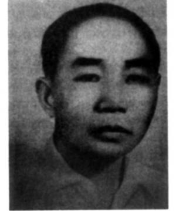

HÀN GẮN VẾT THƯƠNG CHIẾN TRANH

guyễn Huy Phan có nhiều dịp chứng kiến tác động kinh khiếp của thương tích chiến trận. Là một bác sĩ phẫu thuật vào năm 1953, ông tham gia cuộc chiến chống Pháp; từ 1964 đến 1975, ông chiến đấu chống Mỹ; và năm 1979, ông phục vụ trong cuộc xung đột biên giới với người Trung Quốc.
Những kinh nghiệm ấy khiến ông trở thành một người có uy tín khi nói chuyện về đề tài thương vong mà kho vũ khí chiến tranh khổng lồ gây ra đối với người lính. Qua nhiều năm, ông là người trực tiếp chứng kiến sự phát triển liên tục của các loại vũ khí gây thương vong và tàn phế cho con người – kết quả của sự phát triển công nghệ và hành trình không ngừng của con người nhằm tìm ra các phương cách thực hiện chiến tranh một cách hiệu quả. Trong hoàn cảnh công nghệ của đối phương liên tục được hoàn thiện, nhà phẫu thuật quân y cũng buộc phải không ngừng nâng cao kiến thức để có thể chữa trị hữu hiệu nhất các vết thương đặc thù do từng loại vũ khí gây nên.
Trách nhiệm của ông Phan trong suốt cuộc chiến không chỉ là trị thương cho binh lính để họ có thể hồi phục và ra trận càng nhanh càng tốt, ông còn đảm nhiệm việc phân tích, nghiên cứu để cải tiến thời gian điều trị và chẩn đoán. Do phía người Mỹ liên tục đưa các công nghệ vũ khí mới vào chiến trường, trách nhiệm này chiếm hầu hết thời giờ của ông.
Ông Phan tổ chức và lãnh đạo đội ngũ y tế nghiên cứu đặc điểm của vũ khí hiện đại để qua đó quyết định phương pháp chẩn đoán và chữa trị thích hợp nhất đối với từng loại vết thương cụ thể. Kết quả là ông đã có một kiến thức khá độc đáo trong việc xử trí vết thương chiến trường. Đó là nền tảng kiến thức đã giúp ông, cho tới ngày qua đời vào năm 1997, có một uy tín ở tầm thế giới về chữa trị một trong những loại thương tích đặc biệt nhất – và cũng gây ra nỗi kinh hoàng lớn nhất – mà một chiến binh có thể hứng chịu. Ông Phan trở thành nhà tiên phong trong lĩnh vực phẫu thuật tái tạo cơ quan sinh dục cho đàn ông.
Kinh nghiệm là người thầy vĩ đại. Nhưng thật không may cho cộng đồng y tế Việt Nam, phần lớn kinh nghiệm đó đều liên quan đến chiến tranh. Cuộc chiến với người Pháp đã giúp Hà Nội có một đội ngũ y tế được huấn luyện thể lực tốt để hành quân cùng lính chiến. Cuộc chiến đó đã cho thấy sự thiếu hụt về hỗ trợ y tế cho quân đội, và sự thiếu hụt này đã được cố gắng bù đắp trong giai đoạn hòa bình ngắn ngủi mà Bắc Việt được hưởng trước cuộc xung đột với Mỹ. Ông Phan giải thích về điều này cũng như một số biện pháp khắc phục:
“Sau năm 1954, có một giai đoạn hòa bình ngắn ngủi – từ 1954-1963. Trong thời kỳ đó, chính phủ gửi nhiều bác sĩ trẻ ra nước ngoài - ở châu Âu – để nâng cao kỹ năng và kiến thức. Chúng tôi có cơ hội tổ chức đội ngũ y tế chuyên trách trong quân đội. Vì thế, khi cuộc chiến với người Mỹ nổ ra, chúng tôi đã có chuyên gia trong nhiều lĩnh vực. Chẳng hạn, hồi kháng chiến chống Pháp, chúng tôi không có ngành phẫu thuật tạo hình; nhưng trong chiến tranh chống Mỹ, chúng tôi có đủ chuyên gia làm việc trong nhiều lĩnh vực, như huyết học, chỉnh hình, phẫu thuật tạo hình, v.v. Những người này được biên chế vào các nhóm phẫu thuật chuyên trách với đủ y cụ để thực hiện nghiệp vụ…Chúng tôi không chỉ có trường y tại Hà Nội mà còn có tại nhiều thành phố lớn khác. Những trường học này tiếp tục mở ra nhiều chuyên ngành nữa. Trong suốt cuộc chiến, các bác sĩ chuyên khoa trẻ nối tiếp nhau lên đường làm nhiệm vụ. Những người từng làm việc thường trực ở các đội quân y được đưa đi đào tạo lại trong thời gian vài tháng trước khi trở lại đơn vị. Dạng đào tạo hỗ trợ này giúp cung cấp cho chúng tôi một số lượng bác sĩ đủ để đáp ứng nhu cầu của quân đội.
Trong cuộc chiến với người Mỹ, chúng tôi rất khó ở lâu một chỗ. Để theo chân bộ đội, chúng tôi thường tổ chức
các đơn vị phẫu thuật lưu động. Tôi làm trưởng một bệnh viện phẫu thuật lưu động… Nhiều lần, việc di chuyển cả một bệnh viện là không thể nên chúng tôi tổ chức từng nhóm phẫu thuật chừng 20-30 hoặc 50-60 người, tùy theo nhiệm vụ cụ thể… nhằm hỗ trợ y tế cho tiền tuyến, làm việc ngay bên cạnh những người lính chiến, nơi chúng tôi có thể chăm sóc thương binh.
Chúng tôi có một vài kinh nghiệm về bệnh viện lưu động từ thời chống Pháp. Nhưng thời chiến tranh Việt Nam, có nhiều đơn vị, nhiều đội hơn và rất nhiều bác sĩ chuyên khoa, bởi chúng tôi đã có khoảng thời gian gần mười năm được đào tạo bác sĩ chuyên khoa tại các nước anh em như Liên Xô, Hungary, Bulgaria. Chúng tôi cũng gửi nhiều bác sĩ đi học tập tại Berlin, Tiệp Khắc, Cuba và nhiều nơi khác; chương trình này tiếp tục được tiến hành suốt cuộc chiến chống Mỹ. Sau khi được đào tạo chuyên sâu, họ trở về Việt Nam để phục vụ cho quân đội. Vì thế chúng tôi có đủ bác sĩ chuyên khoa.
Thời đó chúng tôi không phân biệt y tế dân sự và quân sự. Quân đội phối hợp với bên dân sự và bác sĩ phẫu thuật quân đội cũng chữa trị dân thường một khi người dân cần đến. Sĩ quan và bộ đội cũng được chữa trị trong bệnh viện dân sự. Khi quân y gặp khó khăn, bên y tế dân sự sẽ chia sẻ nhiệm vụ. Có một sự hợp tác toàn diện và sự thấu hiểu lẫn nhau giữa hai bộ phận này, và điều đó rất hữu ích. Nếu không hợp tác tốt, chúng tôi hẳn đã gặp nhiều khó khăn. Suốt thời chiến tranh, có thể nói rằng các bác sĩ chuyên khoa tốt nhất đều phục vụ trong quân đội.
Tất cả các đơn vị của chúng tôi đều được chăm sóc y tế khá tốt nhờ sự hỗ trợ hậu cần rất mạnh từ một số nước anh em như Liên Xô, Trung Quốc, v.v. Họ cung cấp cho chúng tôi phương tiện làm việc, như y cụ, thuốc men – nhưng không cung cấp nhân sự; bác sĩ chuyên khoa của chúng tôi đảm trách hết mọi khâu. Có nước đề nghị cử người đến giúp đỡ nhưng chúng tôi từ chối. Điều này xuất phát từ tinh thần tự quyết, tinh thần trách nhiệm của chúng tôi với người dân nước mình và tư tưởng tự lập trong mọi hoạt động. Vì thế, chúng tôi từ chối những đề nghị đó. Bên phía đối phương, chính quyền Sài Gòn dựa dẫm vào sự giúp đỡ của Mỹ. Thậm chí binh lính nhiều nước khác còn tham chiến bên cạnh quân Mỹ. Ở bên này, chúng tôi chiến đấu một mình.
Bệnh viện phẫu thuật lưu động có hơn 200 nhân viên y tế… Trong đó hai mươi lăm phần trăm là bác sĩ. Đôi khi bệnh viện tiếp nhận tới 500 thương binh trong một giai đoạn ngắn. Vì thế, chúng tôi phải hoạt động cả ngày lẫn đêm. Nhiều lúc, chúng tôi phẫu thuật suốt 24 tiếng đồng hồ mỗi ngày trong hai, ba ngày liên tiếp. Nhiều lúc điều kiện làm Ông Phan và các đồng nghiệp đầy tâm huyết của ông liên tục tìm tòi để cải thiện kiến thức và kỹ năng mỗi khi có loại vũ khí mới gây ra thương vong trên chiến trường. Cách làm này rất hữu dụng sau khi Mỹ đưa vào sử dụng một loạt vũ khí đáng sợ được gọi là ‘CBU’, hay bom bi. Mỗi quả bom bi chứa khoảng 300 mảnh sắt, mỗi mảnh có đường kính nhỏ hơn 5,5 milimét. Khi phát nổ quả bom bắn mảnh kim loại theo nhiều hướng khác nhau. Người không may đứng trong phạm vi gần quả bom phát nổ sẽ không chết ngay lập tức, các mảnh kim loại li ti hoặc xuyên qua cơ thể người hoặc nằm lại trong đó. Mảnh bom để lại vết thương gần như không thể thấy được trên cơ thể nạn nhân khiến cho việc chữa trị rất khó khăn. Đối với vết thương không thể nhìn thấy rõ, rất khó để cho bác sĩ phẫu thuật chẩn đoán – dẫn đến khó khăn trong chữa trị. Sự chậm trễ trong chẩn bệnh làm gia tăng nguy cơ tử vong.
Vết thương ở sọ là một thách thức lớn trong chẩn đoán. Có nhiều trường hợp, mảnh bom chỉ đâm thủng một bên hộp sọ.
“Vết thương trong hộp sọ rất đặc biệt”, ông Phan giải thích, “vì nó giống y hệt trái bóng bi-da”. Xung lực của mảnh bom khiến nó bay tứ tung trong hộp sọ trước khi nằm yên một chỗ.
“Mảnh bom đi qua hộp sọ, xuyên qua não và bay tứ tung”, ông Phan diễn giải tiếp. “Nó có một quỹ đạo dích dắc… Chúng tôi nhận được rất nhiều ca bị thương vùng sọ và mặt do bom bi gây ra. Đôi lúc chỉ một quả bom mà gây ra thương vong cho nhiều người – vết thương từ đầu tới chân. Ban quân y ngay từ đầu đã đặc biệt quan tâm tới loại vết thương này và đã tổ chức một nhóm bác sĩ đặc biệt để nghiên cứu. Tôi là một trong những người chịu trách nhiệm tìm giải pháp điều trị vết thương do bom bi gây ra.
Tôi nghiên cứu vấn đề này với sự giúp đỡ của nhiều bộ phận khác nhau trong quân đội, trong đó có cả bên công binh. Chúng tôi mất ba, bốn tháng để nghiên cứu tìm giải pháp và cuối cùng đã tìm ra.
Chúng tôi đã viết rất nhiều bài nghiên cứu về vấn đề này cũng như một số vấn đề khác. Trong giai đoạn 1968-1970, các bài viết đã được đưa tới nhiều nước để chia sẻ kinh nghiệm với đồng nghiệp ở những nơi ấy. Tôi là Tổng thư ký của nhóm bác sĩ này. Các bài viết tập trung mô tả cách thức khám và điều trị phẫu thuật đa chấn thương. Nhờ kinh nghiệm của chúng tôi mà các đồng minh có thể giảm được thương vong trên chiến trường.
Trước khi có cuộc nghiên cứu của chúng tôi, việc chữa trị vô cùng khó khăn. Nhưng sau đó, chúng tôi đã trở thành chuyên gia trong lĩnh vực này; chúng tôi biết cách khám và điều rtij vết thương theo cách tốt nhất. Chúng tôi viết lại tất cả để làm cẩm nang cho giới bác sĩ phẫu thuật quân y. Các chuyên gia giỏi nhất, những người lãnh đạo trong các chuyên ngành khác nhau, đã chia sẻ kinh nghiệm, từ đó tìm ra giải pháp cho mỗi chuyên ngành. Chúng tôi có cẩm nang hướng dẫn để các bác sĩ trẻ áp dụng điều trị trong những trường hợp cụ thể”.
Ông Phan tiếp tục nói về cách thức chẩn đoán đối với người bị thương do bom bi: “Trước khi bom bi xuất hiện, chưa hề có các loại chấn thương sọ não như thế… Với bom bi, chỗ mảnh bom găm vào nhỏ đến mức không thể thấy được. Do mảnh bom rất nhỏ nên vết thủng trên da cũng rất nhỏ. Thế rồi chúng tôi đã tìm ra một cách rất đơn giản – bóp vào vùng da của người bị thương xem có máu hoặc hơi thoát ra không. Bằng cách đó, bác sĩ nhanh chóng tìm ra được vết thủng trên da… Chúng tôi cứ bóp liên hồi vào từng vùng da. Vấn đề đã được giải quyết khá dễ dàng”.
Cuối cùng, nhóm của ông Phan phát hiện ra rằng không nhất thiết phải lấy tất cả mảnh bom ra khỏi cơ thể.
“Chúng tôi nhận thấy mảnh bom không gây nhiễm trùng”, ông Phan giải thích. “Vì thế chúng tôi để mảnh bom ở lại trong cơ thể người bị thương trong thời gian dài, đặc biệt là những mảnh bom nhỏ. Ban đầu, nhiều bác sĩ tìm cách lấy hết tất cả mảnh bom ra ngoài và đã gây ra nhiều vấn đề khác. Đến khi phát hiện ra rằng không cần thiết phải lấy tất cả mảnh bom, chúng tôi chỉ tập trung vào việc chữa trị vết thương”.
Trong khi bom bi gây ra nhiều rắc rối và đòi hỏi cách chữa trị đặc thù thì các loại vết thương khác cũng đòi hỏi phải có phương cách trị liệu đặc biệt cũng như mất thời gian để hồi phục. Đáng nói nhất có thể kể tới bom napalm.
“Vùng bỏng thường rất nghiêm trọng – bỏng tới ba hoặc bốn độ, rất sâu và nặng. Người bị thương phải nằm viện trong thời gian dài, việc chữa trị rất mất thời gian và tốn kém. Sau đó, khôi phục lại chức năng của các bộ phận bị ảnh hưởng là rất khó khăn bởi vết bỏng rất sâu và rất nghiêm trọng. Chúng tôi gặp khó khăn lớn với bom napalm. Việc bệnh nhân ở lâu trong bệnh viện cũng khiến họ đối mặt với nguy cơ nhiễm trùng cao… Bác sĩ mất nhiều thời gian để chăm sóc những vết bỏng này. Các vết bỏng gây ra đau đớn vô cùng…”.
Từng chữa trị thương binh trong cả hai cuộc chiến với Pháp và Mỹ, Bác sĩ Phan nhận ra một sự thay đổi rất lớn về các loại vết thương phổ biến mà người lính phải chịu đựng trên chiến trường. “Suốt cuộc chiến chống Pháp, vết thương chủ yếu do vũ khí nhỏ gây ra; nhưng trong cuộc chiến chống Mỹ, phần lớn do bom và tên lửa từ trên không và ở một chừng mực nào đó là từ các khẩu pháo. Số ca bị thương do vũ khí nhỏ gây ra ít hơn rất nhiều”.
Việc thiếu thốn y cụ, tiếp tế và sự chăm sóc y tế, v.v. là vấn đề rất nghiêm trọng đối với các lực lượng miền Bắc chiến đấu ở miền Nam, nhưng đôi khi ngay cả Hà Nội cũng đối mặt với khó khăn này. Tuy nhiên, theo ông Phan, thiếu thốn không gây khó khăn trong việc chữa trị cho từ binh Mỹ.
“Tôi nhớ vào năm 1969 tới năm 1970, tôi có dịp phẫu thuật cho hai phi công bị bắn rơi máy bay ở miền Bắc. Tôi không nhớ tên họ - nguyên do thời đó là mỗi phi công ấy đều lấy một cái tên Việt Nam”. (Người ta thường lấy biệt danh Việt Nam để đặt cho các tù binh vì việc phát âm tên người Mỹ là rất khó khăn).
“Một đơn vị quân y tiền phương mang hai phi công đến chỗ chúng tôi. Đây là hai ca rất khó, đòi hỏi phải có phương thức chữa trị đặc biệt. Tôi nhớ cả hai đều bị gãy chân sau khi nhảy khỏi máy bay… Một người có lẽ bị bắn ở ngoại ô Hà Nội còn người kia được đưa đến từ một nơi xa hơn. Cả hai đều không phải bị bắn rơi ở nội đô Hà Nội và đã được cấp cứu trước khi đến chỗ chúng tôi. Khi tới nơi, chân họ đã được băng nhưng vẫn cần chăm sóc đặc biệt. Lúc bấy giờ tôi là bác sĩ phẫu thuật tổng quát – một trong hai bác sĩ trưởng của bộ phận phẫu thuật tại bệnh viện quân y ở trung tâm thành phố. Tôi mang hàm trung tá. Tôi gặp hai phi công và hỏi họ đã bị thương như thế nào cũng như đã được chữa trị ra làm sao. Tôi chuyển họ tới phòng chụp X-quang rồi sau đó tiến hành phẫu thuật. Tiếp đó, họ được chuyển tới nhà tù Hỏa Lò, thường được biết đến với tên gọi ‘Hilton Hà Nội’. Họ ở đấy và nếu họ cần được chữa trị thì các bác sĩ khác sẽ tới tận nhà tù để chăm sóc. Nếu bác sĩ ở đấy gặp khó khăn thì chúng tôi sẽ tư vấn… Chúng tôi không theo đến cùng các ca này mà là các chuyên gia khác. Đó là nhiệm vụ của họ - một nhiệm vụ đặc biệt”.việc rất không bình thường – đôi khi dưới giao thông hào hoặc hầm trú ẩn”.
Tình trạng thiếu thốn nghiêm trọng đối với binh sĩ Bắc Việt chiến đấu ở miền Nam đôi khi khiến họ phải sử dụng mưu mẹo chiến trường. Dung dịch muối là thứ luôn luôn thiếu. Người ta đã dùng nước dừa trộn với một vài thứ khác để thay thế.
Về điều kiện y tế trên chiến trường, ông Phan kể: “Nhiễm trùng gây ra một số khó khăn, nhưng đấy không là trở ngại lớn bới chúng tôi rất có kinh nghiệm trong việc điều trị vết thương. Chúng tôi biết cách tốt nhất để điều trị vết thương do bom đạn là để cho chúng hở chứ không khâu lại. (Cách điều trị này được nhiều bác sĩ Mỹ hiện nay thực hiện)…Chúng tôi phẫu thuật một cách cẩn thận để tránh gây nhiễm trùng. Đôi khi có sai sót, nhưng chúng tôi thường xuyên tổ chức các buổi họp với sự tham gia của bác sĩ, chuyên gia phẫu thuật, y tá nhằm hạn chế sự cố. Sau khi mắc một sai sót, chúng tôi lập tức lập một nhóm nhỏ để mổ xẻ vấn đề, phân tích xem các khâu đã thực hiện ra làm sao. Chúng tôi mời chuyên gia giỏi từ các đơn vị khác tới họp chung. Trong suốt cuộc chiến, chúng tôi luôn họp đều đặn, đôi khi họp ngay sát mặt trận”.
Kho vũ khí Mỹ cùng với những cơn mưa mảnh bom mà nó tạo ra đã khiến nhiều nạn nhân nam giới gặp phải loại thương tích rất đặc biệt – đứt dương vật. Dù loại vết thương này không đe dọa mạng sống nhưng nó khiến nạn nhân phải chịu đựng một sự đau đớn và tổn thương tâm lý vô cùng nghiêm trọng. Tình trạng này đã thúc đẩy ông Phan tìm ra phương cách khôi phục lại dương vật cho nạn nhân. Ông kể:
“Trong suốt cuộc chiến, tôi đã xây dựng một chuyên khoa để xử lý vấn đề này bởi có quá nhiều ca bị mất dương vật… Tôi đã dành nhiều tháng trời nghiên cứu. Sau đó, tôi thực hiện việc phẫu thuật tái tạo dương vật và các bộ phận khác của cơ quan sinh dục cho nạn nhân. Mục đích của việc phẫu thuật không chỉ là đem lại thẩm mỹ mà còn tái tạo chức năng để về sau nạn nhân có thể có con cái. Sau khi được chữa trị, các nạn nhân đã cưới vợ và quan hệ tình dục bình thường. Tôi đã chia sẻ kinh nghiệm này với đồng nghiệp các nước. Chẳng hạn, năm 1979, tôi đã trình bày một báo cáo tại Paris nhận Hội nghị lần thứ 24 về Phẫu thuật thẩm mỹ tái tạo của Pháp. Tới thời điểm đó, tôi đã thực hiện hai mươi lăm cuộc phẫu thuật tái tạo toàn bộ dương vật và tôi đã trình bày tại Hội nghị. Kể từ đó, tôi đã phẫu thuật thêm mười ca nữa với kỹ thuật phức tạp hơn, chẳng hạn như vi phẫu”.
Sau chiến tranh, vi phẫu để tái tạo cơ quan sinh dục trở nên dễ dàng – cho cả bác sĩ lẫn bệnh nhân. So sánh kỹ thuật tái tạo ngày nay với trường hợp đầu tiên mà mình phụ trách, ông Phan nói: “Thay vì phải tiến hành tới sáu cuộc phẫu thuật tái tạo và đòi hỏi thời gian nằm viện từ sáu tới bảy tháng, ngày nay người ta chỉ cần phẫu thuật một lần với công nghệ vi phẫu và bệnh nhân chỉ nằm viện trong ba tuần… Đôi khi chiến tranh tạo cho chúng tôi cơ hội hoàn thiện kỹ năng trong một số lĩnh vực đặc biệt cũng như tìm ra các kỹ thuật mới. Vì thế, ở một góc độ nào đó, nó có đóng góp vào sự phát triển của y khoa…
Chúng tôi tái tạo dương vật bằng cách cắt một miếng ở thành bụng và cắt dây thần kinh từ tay. Chất liệu ở thành bụng và dây thần kinh sẽ được cấy vào khu vực sinh dục… Rồi sau đó chúng tôi cấy sụn vào để khôi phục cả hình dạng lẫn chức năng. Kết quả là bệnh nhân có thể đi tiểu đứng và quan hệ tình dục bình thường. Với sự phát triển của kỹ thuật mới thì điều này càng được thực hiện dễ dàng. Giờ đây, không chỉ khôi phục lại được dương vật mà còn cả khoái cảm nữa, nhờ việc cấy những dây thần kinh cẳng tay – còn được gọi là vành cẳng tay hay vành cẳng tay Trung Hoa… Chúng tôi cấy sụn, phục hồi ống tiểu… mọi thứ liên quan tới tái tạo được thực hiện chỉ trong một bước”.

trước
và sau khi phẫu thuật
Trình độ phẫu thuật thẩm mỹ và tái tạo của Bác sĩ Phan đã được công nhận rộng rãi khi ông được giao nhiệm vụ làm thay đổi khuôn mặt của một điệp viên rất quan trọng trong chiến tranh Việt Nam, đó là Tư Mâu, người đã bị lộ dạng trong thời gian hoạt động bí mật ở Sài Gòn. Sau khi bị lộ, Tư Mâu đã trốn thoát nhưng do các hoạt động của chính quyền Hà Nội ở miền Nam đòi hỏi nên người ta đã quyết định tung ông trở lại Sài Gòn sau khi đã được Bác sĩ Phan phẫu thuật thay đổi ngoại hình. (Phan kể rằng ông đã phải phẫu thuật hai lần đối với Tư Mâu, do sau lần thứ nhất, người chỉ huy vẫn còn nhận ra ông ta).
Hai thế hệ trong gia đình Bác sĩ Phan đều trải qua bi kịch của chiến tranh.
Trong cuộc chiến chống Pháp, ông cụ thân sinh của Bác sĩ Phan dạy học ở Hà Nội. Khi thấy tỉnh Bắc Thái cần lập một ngôi trường, ông đã tới đây để giúp dựng trường. Ông được dân chúng trong làng rất tin yêu vì những việc làm cho cộng đồng.
Một ngày nọ, vào năm 1950, khi bố của Phan đang dạy học, một đại đội lính Pháp tiến vào làng. Giữa lúc đang cùng học sinh chạy trốn, ông đã bị trúng đạn của máy bay Pháp. Ông và hai học trò chết ngay lập tức. Phải đến sau khi quân Pháp rút khỏi làng thì dân chúng mới tìm được xác nạn nhân trong đêm tối để đưa đi chôn.
Lúc bố mất, Phan đang ở nơi khác và không thể trở về làng được. Trong số bốn anh em, chỉ có người em nhỏ tuổi nhất của Phan tên là Dương, lúc đó 16 tuổi, đang ở nhà với mẹ. Cái chết của bố đã thôi thúc Dương tình nguyện nhập ngũ để đánh Pháp. Khi bị từ chối do chưa đến tuổi, Dương sang Trung Quốc học. Mười sáu năm sau, Dương lại xung phong vào bộ đội – lần này là để đánh Mỹ. Ở tuổi 32, tuổi tác không còn là rào cản nữa. Là cha của một bé gái hai tuổi và một bé trai mới sinh, Dương lao vào chiến trường và anh đã không bao giờ gặp lại các con nữa. Một năm sau, năm 1967, anh hy sinh khi đang làm nhiệm vụ.
Bi kịch trong cái chết của người em trai này càng trở nên nặng nề hơn khi gia đình Phan không biết được thông tin gì cũng như không biết hài cốt ở đâu. Trong văn hóa Việt Nam, việc thăm mộ người thân đã quá cố là một phong tục đặc biệt quan trọng. Bên cạnh đó còn có một mặt quan trọng khác liên quan tới vòng sinh tử: hài cốt được chôn tại nơi người chết đã chào đời; xương thịt người chết tan vào đất, nuôi sống hoa màu; hoa màu đó lại được thu hoạch để nuôi người đang sống. Nếu không tìm được hài cốt của Dương, Phan và gia đình người em trai sẽ không thể thực hiện được phong tục truyền thống này.
Ông Phan đã thực hiện một cuộc tìm kiếm hài cốt người em trai suốt 17 năm. Với sự giúp đỡ từ một số đồng đội cũ của người em, cuộc tìm kiếm kết thúc vào năm 1984 trên một vùng đồng hoang gần Đà Nẵng.
“Nhiều người cung cấp cho tôi thông tin về em trai”, ông Phan kể. “Một trong những khó khăn mà chúng tôi đối mặt là sau khi chiến tranh kết thúc, quá trình xây dựng nhà cửa hoặc làm đất canh tác đã dẫn tới việc nhiều ngôi mộ liệt sĩ bị chuyển liên tục. Hài cốt em tôi bị di dời tới ba lần trước khi chúng tôi tìm ra. Có một mẩu kim loại đánh dấu ở nơi chôn cất có ghi tên và ngày hy sinh của cậu ấy. Nơi chôn nằm cách tỉnh lộ chừng 50 tới 60 mét. Nhiều người khác được chôn xung quanh. Dù không phải là chuyên gia giám định pháp y, tôi nhanh chóng nhận ra những chiếc răng quen thuộc trong bộ hài cốt của cậu ấy. Hài cốt sau đó được đưa về Hà Nội. Vợ con cậu ấy rất vui và mỗi năm vẫn đều đặn đến thăm mộ. Cả họ và người em trai đã mất của tôi giờ đã thanh thản”, ông Phan kết luận.